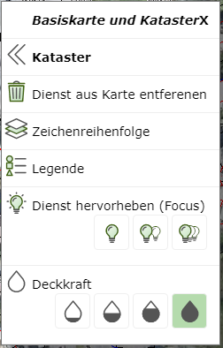
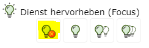
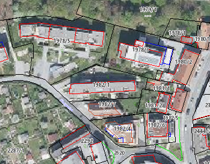
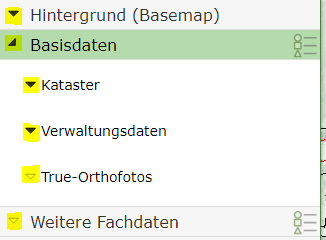
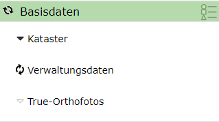

Build 3.21.4601 (2021-11-17)¶
In this release, a context menu for the map was introduced, allowing faster access to the properties (e.g. transparency, focus, legend) of the individual services. In addition, the map background (street map, aerial imagery) can be quickly and easily switched via the context menu. The context menu appears with a right-click on the map and is currently only available in the desktop variant (not on mobile).
In addition, the Focus property was introduced for services. Focus is comparable to making services transparent. However, here the opacity for the desired service is set to the maximum value, and all other map services are shown transparently (see below).
Small changes were also made to the presentation variants tree (hourglass, …)
Map Context Menu¶
The context menu for a map appears when you right-click on the map.
Note
The map’s context menu is not available when the current tool is a drawing tool (sketch tool, e.g. map markup, measuring, editing, …). There, the right mouse button is already reserved for the sketch’s context menu (construction tools).

The heading shows the name of the current map (here: Base Map and Cadastre).
Clicking on the heading or the X icon closes the context menu again.
Under the Map Services section, all services included in the map are listed. If a service is shown
in gray text, no topics for this service are currently switched visible at the current map scale.
The first entry under Map Services is always Background (Basemap). Clicking on this entry lists
all available background services in the context menu:

The currently shown background service is highlighted. Clicking on a background service activates it in the map. At the end of the list, the opacity for the current background service can be set.
With « Background (Basemap), you can switch back to the original list of services in the context menu.
If you move the mouse pointer over an entry in the list of map services in the context menu, only that service is shown in the background on the map. This should help identify the desired service in the map. Clicking on a service opens the context menu for that map service:

The following options are offered here for the service:
Remove service from map: The service is removed from the map. This only applies to the current session. If you open the map at a later time, this service is back in the map. This of course does not apply to services that were manually added to the map during the session.
Draw order: Opens the draw order dialog for this map. There, the service can be moved up or down.
Legend: Opens the legend dialog for this service.
Highlight service (Focus): Here, the service can be highlighted. This property is also a new feature of this release and is described in more detail below.
Opacity: Here, the opacity/transparency for this service can be set.
Highlighting Services (Focus)¶
With this function, services can be highlighted relative to all map services. In overloaded maps, the problem often arises that the crucial information is difficult to distinguish from less important content.
With Highlight Services (Focus), all services are shown transparently (less intensely) (including the background service). The affected service is shown with full opacity. The degree of highlighting can be determined via the light bulb icon: the more light bulbs, the higher the focus:
The focus for the service can be set via the context menu for a service described above. If you select a focus level, an icon to end the focus mode is also additionally shown. Clicking on this icon restores the original state of the map:

Note
The icon for ending focus mode appears in several places. This is useful for recognizing that focus mode is active and that it can easily be ended again:

What focus does is shown in the following example: In a map, the aerial imagery and the cadastre are each shown with full opacity. Due to the colorful presentation of the aerial imagery, not all details of the cadastre can be easily recognized:

If you apply focus to the cadastre service, the following presentation results:

The background is still present here for context, but the crucial information (cadastre) is better recognizable.
Note
The same effect could also be achieved by making the background service transparent. However, if there are several services in the map, focus mode is easier to set up for a single service.
Presentation Variants Tree¶
The icons for expanding groups are shown in two variants:

Black (filled) triangle: Indicates that this group contains topics that are switched visible.
White (outlined) triangle: In this group, there are currently no topics switched visible.
The different icons help provide an overview of which containers/groups currently have visible topics in the map.
When the map is rebuilt, an hourglass icon is shown in the presentation variants tree, indicating from which groups data is currently being loaded:
